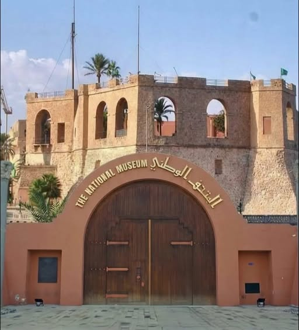

Visit Libya
Visit Libya

VisitLibya AI
Ask before you explore
A guided interface that will later connect visitors to destinations, routes, culture, atlas layers, and travel planning.
Demo Assistant
What would you like to discover?
Ask about destinations, heritage, travel services, eVisa, entry requirements, currency, and the Libya Tourism Atlas.